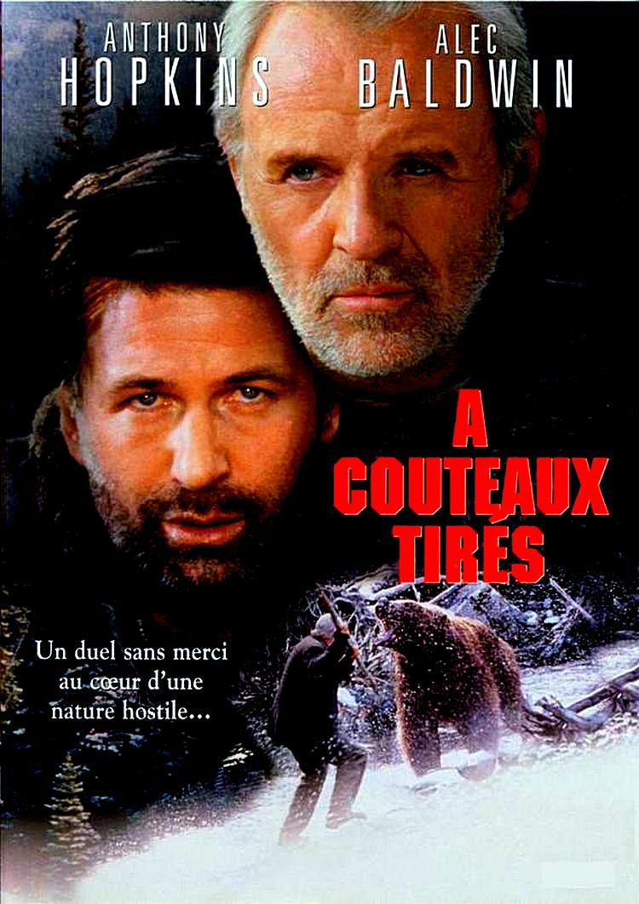
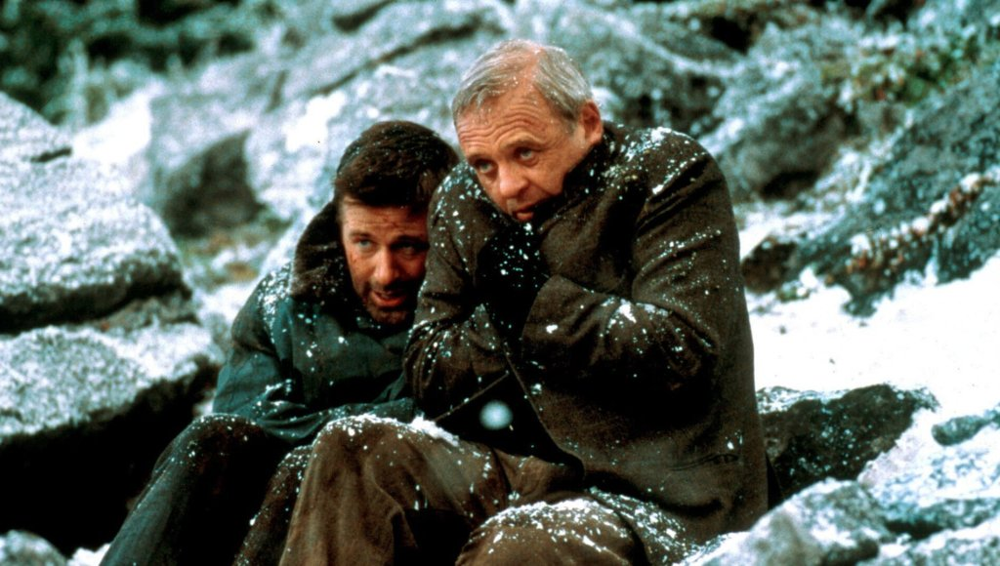
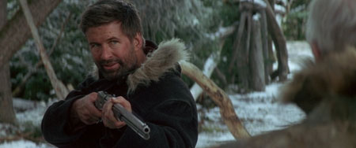

Je l'ai découvert récemment.
Pas dans l'armoire de mon grand-père. Pas sur M6 un soir de semaine. Beaucoup plus tard, par hasard, comme on tombe sur un film qu'on n'attendait pas.
Alec Baldwin. Anthony Hopkins. L'Alaska. Un ours.
Je pensais savoir ce que j'allais trouver.
Je ne savais pas.
The Edge n'est pas un film d'action. Ce n'est pas non plus un thriller au sens classique. C'est quelque chose de plus rare — un film sur ce que la nature révèle des hommes quand elle les dépouille de tout ce qui les protège.
Un ours kodiak comme miroir.
Et deux acteurs au sommet de leur art dans un face-à-face que personne n'avait vu venir.
Ce soir, on entre dans la forêt.

À couteaux tirés (The Edge) — affiche française, 1997
The Edge.
1997. Réalisé par Lee Tamahori. Avec Anthony Hopkins, Alec Baldwin et Elle Macpherson.
Scénario original de David Mamet — dramaturge et scénariste parmi les plus respectés d'Amérique. The Untouchables, Glengarry Glen Ross, Wag the Dog. Un homme qui sait écrire des dialogues qui tranchent et des situations qui révèlent.
Un film produit par Art Linson pour la Fox, sorti en salles en septembre 1997 avec une distribution solide. Reçu correctement par la critique, performance honorable au box-office.
Et pourtant disparu.
Ce qu'on trouve à l'intérieur ne méritait pas l'oubli.
Un milliardaire et le photographe qui accompagne sa femme. Un avion qui s'écrase en Alaska. Un ours kodiak qui les traque. Et entre les deux hommes survivants — une tension qui n'est pas uniquement une question de survie.
Mamet avait quelque chose à dire sur la nature des hommes.
La forêt lui a fourni le décor idéal.
1997.
David Mamet écrit The Edge comme un retour aux fondamentaux du survival américain — Jack London, Ernest Hemingway, la nature comme adversaire absolu et révélateur de caractère. Pas un film de genre au sens commercial du terme. Une étude de caractères placés dans des conditions extrêmes.
Lee Tamahori réalise. Réalisateur néo-zélandais révélé par Once Were Warriors en 1994 — un film brutal, sans concessions, sur la violence domestique dans la communauté maorie. Quelqu'un qui sait filmer la violence et la douleur sans les édulcorer.
Anthony Hopkins est Charles Morse — milliardaire cultivé, homme de livres et d'idées, confronté pour la première fois à quelque chose que l'argent et l'intelligence ne peuvent pas résoudre. C'est 1997, deux ans après Nixon, un an avant le tournage de The Mask of Zorro. Hopkins est au sommet de ce qu'il peut faire.
Alec Baldwin est Robert Green — le photographe de mode. Un homme ambigu, dont les intentions réelles envers Charles ne sont jamais tout à fait claires. Baldwin apporte à ce rôle une tension permanente — on ne sait jamais si on peut lui faire confiance.
L'Alaska comme troisième personnage. Filmé en conditions réelles, avec des températures extrêmes, une nature hostile et magnifique qui n'a pas besoin d'effets spéciaux pour impressionner.
Et un ours kodiak — le plus grand prédateur terrestre d'Amérique du Nord — qui donne au film sa dimension de cauchemar.

Anthony Hopkins & Alec Baldwin — À couteaux tirés, 1997
Charles Morse est milliardaire.
Un homme qui a tout — l'argent, la culture, une femme jeune et belle. Et qui se sait observé, étudié, peut-être trahi. Quelque chose ne va pas entre sa femme et le photographe qu'il a engagé. Il le sent sans pouvoir le prouver.
Puis l'avion s'écrase en Alaska.
Trois survivants. Une forêt hostile. Des températures qui tuent. Et rapidement — un ours kodiak qui les a repérés et qui revient.
Ce qui devait être un voyage de travail devient une lutte pour survivre dans l'un des environnements les plus inhospitaliers de la planète.
Le film pose une question simple et vertigineuse — qu'est-ce qu'un homme sans les protections que la civilisation lui offre ? Sans son argent, sans son statut, sans ses certitudes ?
Charles Morse a lu tous les livres sur la survie. Il sait théoriquement comment se comporter face à un ours kodiak.
La théorie et la réalité sont deux choses différentes.
Et entre lui et Robert Green — la tension qui existait avant l'écrasement n'a pas disparu. Elle s'est juste déplacée dans un territoire où elle peut devenir mortelle.
Ce film est une pièce de théâtre dans une forêt.
C'est la marque de Mamet — réduire les personnages à leur essence en les plaçant dans des situations qui ne laissent aucune échappatoire. Dans Glengarry Glen Ross c'était le bureau, la pression commerciale, l'argent comme seul étalon de valeur. Dans The Edge c'est l'Alaska, le froid, la faim, la peur.
Le résultat est le même — des hommes mis à nu.
Charles Morse est fascinant parce qu'il représente exactement l'inverse de ce qu'on attend d'un héros de survival. Pas un militaire, pas un aventurier, pas un homme d'action. Un intellectuel. Quelqu'un dont la force est dans la tête — la connaissance, la méthode, la capacité à raisonner sous la pression.
Hopkins joue ça avec une précision chirurgicale. Chaque décision de Morse est calculée, pesée, argumentée — même face à l'ours, même au bord de l'épuisement. C'est une performance d'intelligence autant que d'endurance physique.
Baldwin apporte l'ombre. Robert Green n'est jamais tout à fait lisible. Sa loyauté, ses intentions, ses sentiments réels — tout reste ambigu jusqu'au bout. Et cette ambiguïté transforme chaque moment entre les deux hommes en quelque chose de plus chargé que la simple lutte pour survivre.
L'ours kodiak, lui, n'est pas un antagoniste au sens narratif. Il est une force naturelle — implacable, sans intention, sans malveillance. Il mange pour vivre. C'est sa seule logique.
Face à ça, les rivalités humaines semblent dérisoires.
C'est exactement ce que Mamet voulait dire.

Alec Baldwin — À couteaux tirés, Alaska 1997
The Edge n'a pas raté son public au sens commercial du terme.
Il a fait des entrées correctes. La critique l'a reçu favorablement. Hopkins et Baldwin ont été salués. Le film a existé — vraiment existé — pendant quelques semaines en salles.
Et puis il a disparu.
Pas d'une chute brutale. D'un effacement progressif. Le genre de film qui sort, qui fonctionne modestement, et qui glisse peu à peu dans l'angle mort de la mémoire collective sans qu'on sache vraiment pourquoi.
1997 est une année chargée. Titanic arrive en décembre et aspire toute l'attention. Face/Off, Men in Black, L.A. Confidential — le paysage est saturé de films qui marquent l'époque. The Edge, malgré son casting, n'a pas la dimension iconique qui permet à un film de traverser les décennies.
Et le survival n'est pas un genre qui vieillit facilement. Les films d'action des années 80 et 90 ont une esthétique reconnaissable qui crée de la nostalgie. Le survival est plus difficile à réhabiliter — trop ancré dans le réel pour devenir culte, pas assez spectaculaire pour être redécouvert par hasard.
The Edge mérite mieux que l'oubli poli dans lequel il est tombé.
C'est un film adulte, exigeant, écrit par l'un des meilleurs scénaristes américains de sa génération.
Et ça, ça ne se périme pas.
Parce que les films sur les hommes face à eux-mêmes sont rares.
Le cinéma d'action et de survival produit des héros. Des hommes qui surmontent, qui triomphent, qui prouvent quelque chose. The Edge fait autre chose — il pose une question sans réponse simple. Qu'est-ce qu'un homme quand on lui retire tout ?
Charles Morse a la réponse de Mamet. C'est un homme qui pense. Qui observe. Qui applique la méthode là où les autres paniquent. L'intelligence comme seule arme réelle dans un monde qui ne reconnaît plus aucune autre forme de pouvoir.
En 2026, ce film parle encore.
Pas parce que l'Alaska est intemporel — mais parce que la question qu'il pose l'est. Dans un monde saturé d'information, de confort, de protection numérique contre toute forme d'adversité réelle — que reste-t-il de l'homme quand tout ça disparaît ?
Hopkins et Baldwin n'ont jamais été aussi bons ensemble. C'est un face-à-face de haute voltige — deux registres différents, deux façons d'habiter l'espace à l'écran, deux visions du même danger.
Et l'ours kodiak — filmé avec des animaux dressés, dans des conditions réelles — reste l'une des présences animales les plus terrifiantes du cinéma américain des années 90.
Je l'ai découvert récemment. Je ne m'attendais pas à ce que je trouverais.
C'est exactement pour ça que SOMEDAY existe.
The Edge n'est pas un film oublié par accident.
Il est oublié parce que le cinéma ne sait pas toujours quoi faire des films qui ne rentrent dans aucune case — ni franchise, ni genre pur, ni film d'auteur au sens festivalier du terme.
Un survival écrit par Mamet avec Hopkins et Baldwin en Alaska. C'est trop intelligent pour être un film d'action. Trop physique pour être un drame. Trop ambigu pour être un thriller simple.
Et c'est précisément ce qui en fait un grand film.
Je l'ai découvert récemment. Sans attente, sans nostalgie, sans le poids d'un souvenir d'enfance.
Juste un film. Un ours. Deux hommes. Une forêt.
Et l'une des questions les plus simples et les plus vertigineuses que le cinéma puisse poser — de quoi êtes-vous vraiment fait ?
La cassette est dans le lecteur. On rembobine.
Titre original
The Edge
Pays
États-Unis
Genre
Survival / Thriller
Durée
117 min
Scénario
David Mamet
Avec aussi
Elle Macpherson · Harold Perrineau
Fil conducteur
Saison 2 — EP. 02
Écho
Heaven's Prisoners (S2) — Alec Baldwin
Regarder l'épisode
SOMEDAY — S2 EP. 02